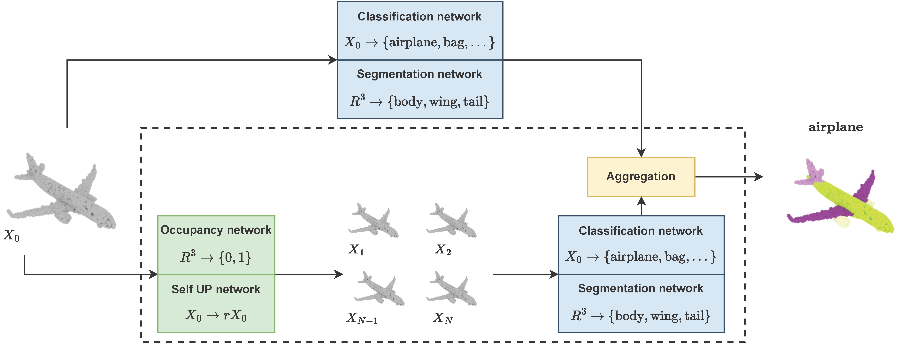
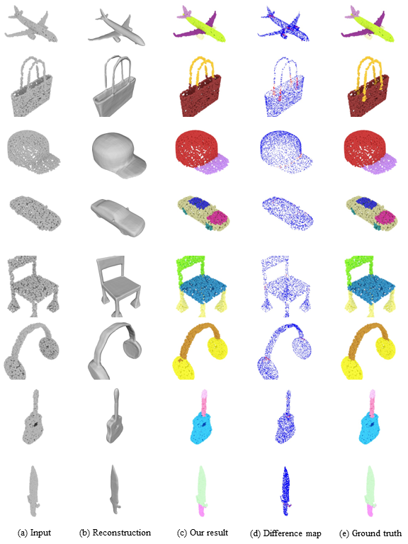
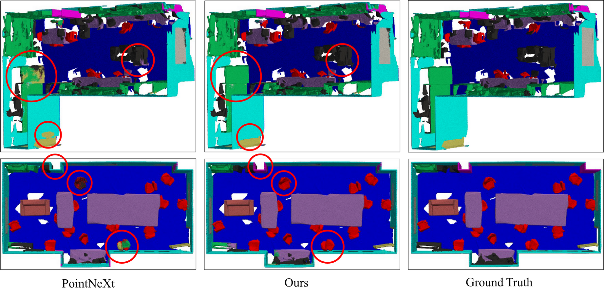
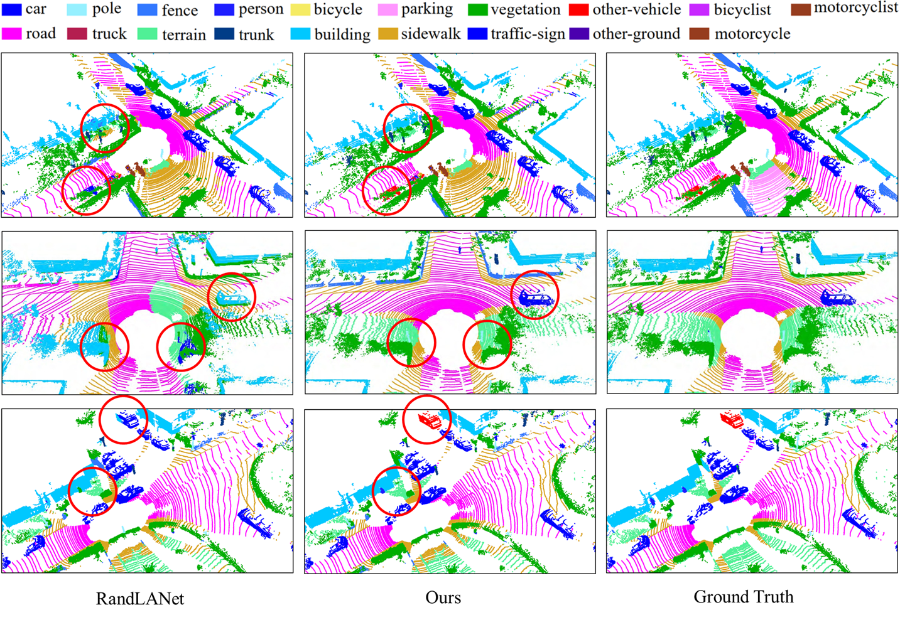

1The Hong Kong University of Science and Technology, Hong Kong SAR
2VinAI Research, Vietnam
3Singapore Management University, Singapore
4Trinity College Dublin, Ireland
#co-first author
📧corresponding author
International Conference on 3D Vision (3DV 2024)

Overview of our test-time augmentation (TTA) method for point clouds sclassification and segmentation.
Abstract
Data augmentation is a powerful technique to enhance the performance of a deep learning task but has received less attention in 3D deep learning. It is well known that when 3D shapes are sparsely represented with low point density, the performance of the downstream tasks drops significantly. In this work, we explore test-time augmentation (TTA) for 3D point clouds. We are inspired by the recent revolution of learning implicit representation and point cloud upsampling, which can produce high-quality 3D surface reconstruction and proximity-to-surface, respectively. Our idea is to leverage the implicit field reconstruction or point cloud upsampling techniques as a systematic way to augment point cloud data. Particularly, we test both strategies by sampling points from the reconstructed results and using the sampled point cloud as test-time augmented data. We show that both strategies are effective in improving accuracy. We observed that point cloud upsampling for test-time augmentation can lead to more significant performance improvement on downstream tasks such as object classification and segmentation on the ModelNet40, ShapeNet, ScanObjectNN, and SemanticKITTI datasets, especially for sparse point clouds.
Given a point set \(\{\mathbf{p}_i
\}_{i=1}^n\) with \(\mathbf{p}_i \in
\mathbb{R}^3\) represented by a matrix \(\mathbf{x}_0 \in \mathbb{R}^{n \times 3}\).
To maintain the generality of our approach, we assume that the input \(\mathbf{x}_0\) is passed to pre-trained
network \(f\) for feature extraction,
and the features are passed to a network \(g\) for final label prediction \(f(\mathbf{x}_0)\) throughout the inference process.
Our goal is to achieve performance improvement in the downstream task via test-time
augmentation, where the final prediction can be defined as:
\[g(\phi(f(\mathbf{x}_0), f(\mathbf{x}_1),
f(\mathbf{x}_2), ...))\]
where \(\phi\) is an aggregation function to
combine multiple features resulting from the original point set \(\mathbf{x}_0\) and the augmented point sets
\(\mathbf{x}_1\), \(\mathbf{x}_2\), etc. Note that the network
\(f\) and \(g\) are pre-trained and left untouched in
test-time augmentation; only the input is augmented.
Traditionally, a simple method for test-time augmentation is
jittering, which adds Gaussian noise to perturb the point cloud \(\mathbf{x}_0\) to generate an augmented
point cloud \(\mathbf{x}_k\):
\[\mathbf{x}_k = \mathbf{x}_0 + \lambda
\mathbf{z}_k\]
where \(\mathbf{z}_k
\sim \mathcal{N}(0, I)\) is a random noise vector from a normal
distribution, and \(\lambda\) is a
scalar value to control the noise magnitude. This simple augmentation
has been widely adopted since the seminal PointNet. An issue of such
augmentation is that it does not consider the underlying surface or
point distribution because the noise \(\mathbf{z}\) is independent of \(\mathbf{x}_0\), resulting in marginal
performance improvement in many cases. In this work, we viewpoint set
\(\mathbf{x}_0\) as a noisy estimate of
a latent surface representation \(\mathcal{S}\), and therefore, we define
point cloud augmentation as the process of sampling additional point
clouds \(\mathbf{x}_k\) that explain
the same surface. We propose to sample augmented point clouds \(\mathbf{x}_k\) (\(k \geq 1\)) in two ways: surface sampling
and point cloud up-sampling. The sampled point clouds can then be
leveraged for downstream tasks such as classification and segmentation.
Qualitative Results

Visualization of part segmentation results on ShapeNet dataset.

Visualization of semantic segmentation results on S3DIS dataset.

Visualization of semantic segmentation results on SemanticKITTI dataset.
Citation
@inproceedings{tavu2024tta,
title={Test-Time Augmentation for 3D Point Cloud Classification and Segmentation},
author={Tuan-Anh Vu, Srinjay Soumitra Sarkar, Zhiyuan Zhang, Binh-Son Hua, Sai-Kit Yeung},
booktitle={Proceedings of International Conference on 3D Vision (3DV)},
year={2024}
}
Acknowledgements
This paper was partially supported by an internal grant from HKUST (R9429). The website is modified from this template.